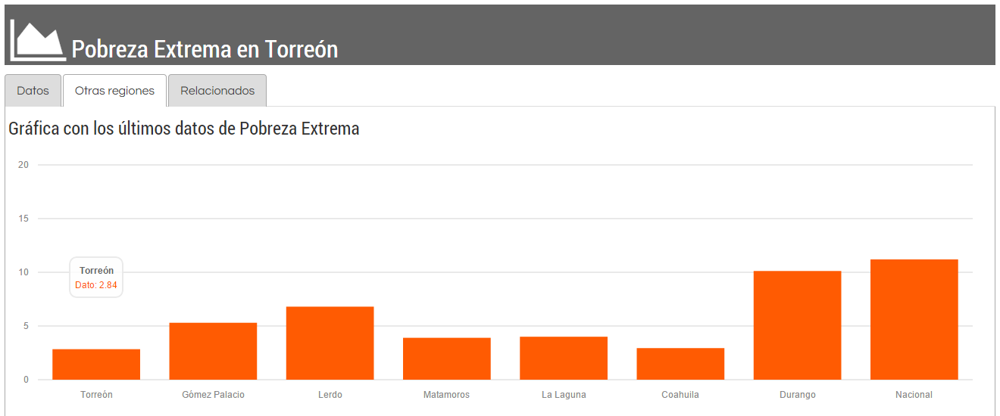
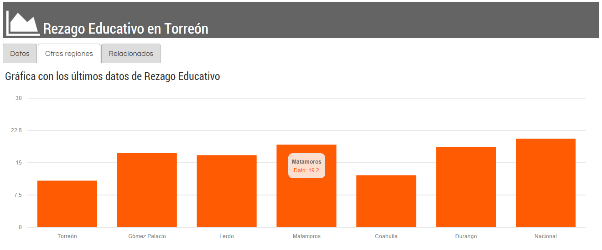
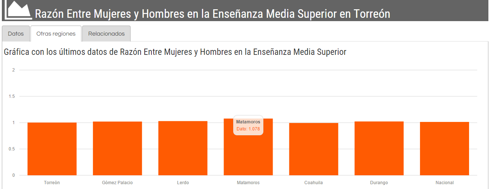
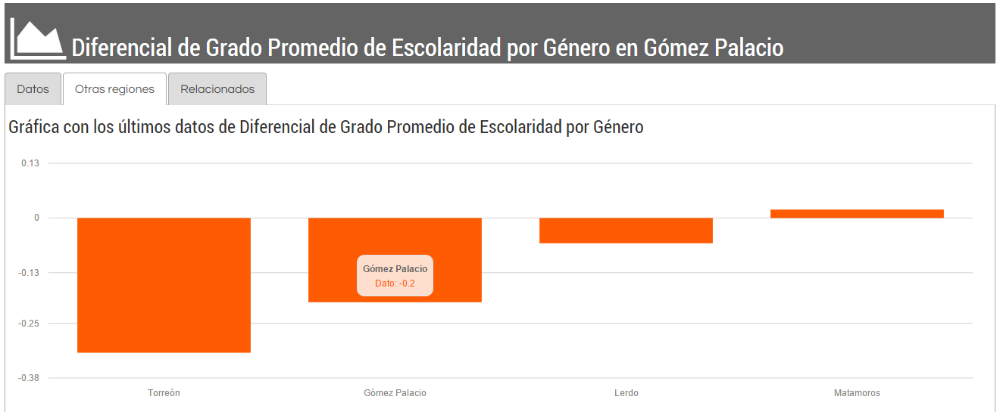
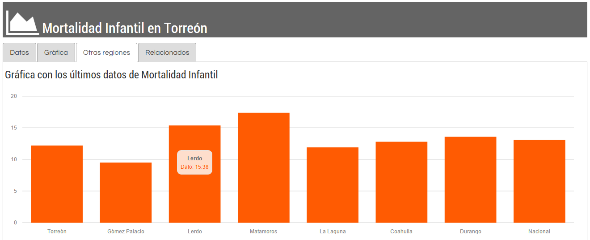
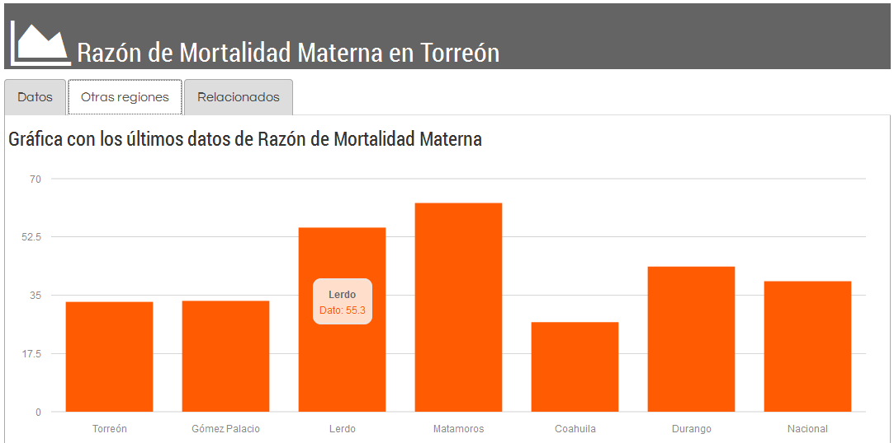
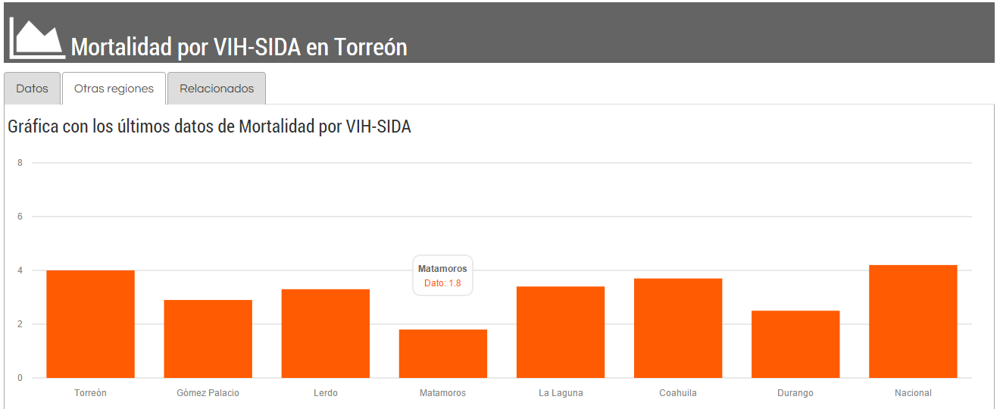
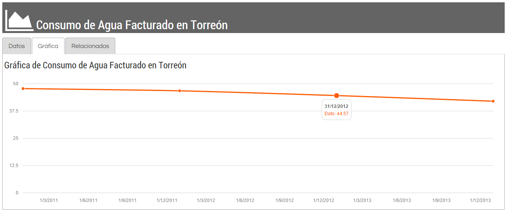
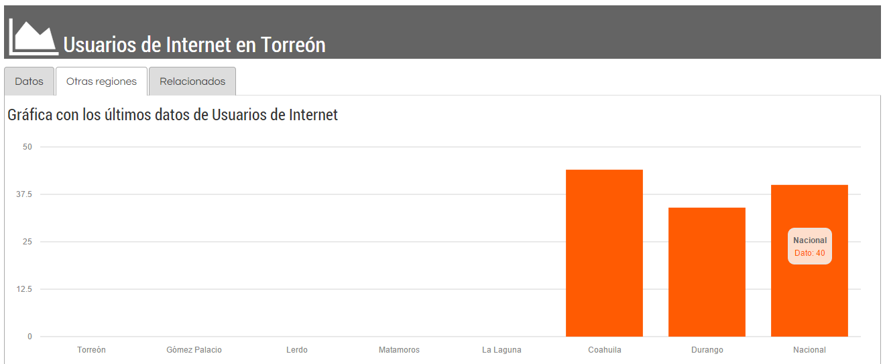

En septiembre del año 2000 fue celebrada la Cumbre del Milenio de las Naciones Unidas, durante la cual 147 jefes de estado firman y 189 países aprueban uno de los retos consensuados más ambicioso de las últimas décadas: la Declaración del Milenio. En este documento se plasman ocho objetivos que tienen la finalidad de guiar a los países suscritos a mejorar la calidad de vida de sus poblaciones mediante políticas encausadas al desarrollo.
Los Objetivos de Desarrollo del Milenio (u Objetivos del Milenio) están basados directamente en actividades y metas específicas que los países se han propuesto alcanzar para este 2015. Los objetivos son:
- Erradicar la pobreza extrema y el hambre.
- Lograr la enseñanza primaria universal.
- Promover la igualdad entre los géneros y la autonomía de la mujer.
- Reducir la mortalidad infantil.
- Mejorar la salud materna.
- Combatir el VIH/SIDA, el paludismo y otras enfermedades.
- Garantizar la sostenibilidad del medio ambiente.
- Fomentar una asociación mundial para el desarrollo.
Estos objetivos se encuentran cuantificados en 21 metas(1) y estas a su vez en 60 indicadores que le dan seguimiento comparativo entre naciones, sujetas a la disponibilidad de datos, aplicando en algunos casos a nivel estatal. En el tiempo en que se suscribió la Declaración del Milenio, eran pocos los instrumentos de registro y seguimiento estadístico a nivel local en México, y en el caso de La Laguna la cultura de la generación y uso de información estadística era casi nula.
El Sistema Metropolitano de Indicadores (SMI) puede darnos una idea general de cuál es la situación de la Zona Metropolitana de La Laguna (ZML) y sus municipios en el contexto nacional en temas directamente relacionados con los Objetivos del Milenio.
Objetivo 1: Erradicar la pobreza extrema y el hambre.
CONEVAL define la pobreza extrema cuando “las personas disponen de un ingreso tan bajo que, aun si lo dedicase por completo a la adquisición de alimentos, no podría adquirir los nutrientes necesarios para tener una vida sana.”
De acuerdo a datos de CONEVAL del 2010 la población en pobreza extrema en el país se encuentra en 11.2%. A nivel estatal, Coahuila y Durango se posicionan con 2.9% y 10.2% respectivamente. En la ZML,la población en esta situación es del 4%, en donde destaca Torreón con el porcentaje más bajo incluso que la media nacional y estatal: 2.8%.

Gráfico: Pobreza Extrema en Torreón. Sistema Metropolitano de Indicadores.
México ha superado 8 de 9 indicadores del seguimiento para este Objetivo (excepto Tasa de crecimiento del PIB por persona ocupada y sin contabilizar los indicadores propuestos como Metas Más Allá del Milenio, MMM1) por lo que podemos inferir que la situación de la ZML y Coahuila han obtenido resultados aceptables.
De acuerdo al indicador de la ONU “Proporción de la población con ingresos per cápita inferiores a 1.25 dólares diarios” el dato para México es de 4% y la meta para 2015 era de 4.6 cumpliendo la meta desde 2012.
Objetivo 2: Lograr la enseñanza primaria universal.
El CONEVAL dentro de su medición multidimensional de pobreza considera el factor de rezago educativo. Contemplando en este parámetro a la población que “tiene de 3 a 15 años, no cuenta con la educación básica obligatoria y no asiste a un centro de educación formal o, tiene 16 años o más, nació antes de 1982 y no cuenta con el nivel de educación obligatoria vigente en el momento en que debía haberla cursado, o, tiene 16 años o más, nació a partir de 1982 y no cuenta con el nivel de educación obligatoria.” Con datos de 2010, para Coahuila, la cifra es de 12.1%. Torreón se encuentra por debajo del estado con 10.8% y Matamoros por encima con 19.2%. La situación de los municipios de la ZML correspondientes a Durango, cuyo dato estatal es de 18.6%, observamos a Gómez Palacio y Lerdo por debajo de la cifra con 17.3% y 16.8. Todos los municipios de la ZML se encuentran por debajo del porcentaje nacional, siendo 20.6%.

Gráfico: Rezago Educativo en Torreón. Sistema Metropolitano de Indicadores.
México ha cumplido dos de cuatro metas establecidas para alcanzar este objetivo. Dos se esperan cumplir este 2015.Podemos considerar que todos los municipios de la ZML tuvieron buen posicionamiento, destacando Torreón, con casi 50% menos rezago que la media nacional.
Objetivo 3: Promover la igualdad entre los géneros y la autonomía de la mujer.
Las metas para alcanzar este Objetivo son medidas por siete indicadores. De las cuales seis han sido alcanzadas por México al momento de la consulta de los resultados provisionales (2013) y uno se espera cumplir durante 2015. El indicador “Razón entre hombres y mujeres en la enseñanza media superior” muestra la cantidad de mujeres matriculadas en bachillerato o su equivalente por cada hombre inscrito. Los datos para la región se encuentran entre el 0.994 (Coahuila) y el 1.078 (Matamoros) prácticamente encontramos equidad ya que el 1.000 nos dice que tenemos una mujer por cada hombre.

La Dirección de Investigación Estratégica del IMPLAN ha diseñado el indicador “Grado promedio de escolaridad de las mujeres menos el grado promedio de los hombres” para dar un seguimiento local y regional a las cuestiones de género a través de la educación. De los municipios de la ZML, Matamoros con 0.02 es el único que cuenta con una cifra positiva, es decir, que la mujer tiene mayor promedio de grados que el hombre,a su vez que es el más cercano al cero, que sería el punto de equilibrio. Lerdo, Gómez Palacio y Torreón le siguen en ese orden con -0.06, -0.2 y -0.32. Podemos observar que en Torreón se encuentra la desproporción acumulada más notoria.

Gráfico: Diferencial de Grado Promedio de Escolaridad por Género. Sistema Metropolitano de Indicadores.
Este último indicador deberá de acercarse al 1.00 gradualmente y mostrar la efectividad que puedan tener las estrategias de inclusión y equidad que observamos con el indicador “Razón entre mujeres y hombres en la enseñanza media superior”.
Objetivo 4: Reducir la mortalidad infantil.
Esta tasa indica la cantidad de defunciones de menores de un año de edad por cada mil nacimientos registrados en un tiempo y territorio delimitado. En este caso hace referencia a 2012.
Este indicador se utilizada tal cual aparece en el SMI para el seguimiento de este Objetivo, por lo que el análisis tendrá mayor precisión, ya que este nos indica claramente el propósito a conseguir, a pesar de que son tres los indicadores que dan el seguimiento a nivel nacional e internacional.

Gráfica: Mortalidad Infantil en Torreón. Sistema Metropolitano de Indicadores.
La tasa nacional se encuentra en 13.1 defunciones de menores de un año por cada mil nacimientos. Coahuila se encuentra por debajo de la tasa nacional (12.8) y Durango la supera ligeramente (13.6). La ZML se encuentra con mejores cifras que los estados que la componen con 11.9. Dentro de la zona, destaca Gómez Palacio con el dato más bajo: 9.5, y Matamoros por encima de la tasa estatal y nacional: 17.4. Torreón con 12.2 rebasa la cifra correspondiente a la ZML.
El objetivo es reducir la mortalidad infantil a 10.8 defunciones para el país. La meta no se ha cumplido según el seguimiento con datos de 2013 a nivel nacional que es 13.0 defunciones por mil nacimientos, por lo que únicamente Gómez Palacio ha alcanzado la meta de 2015 tres años antes.
Objetivo 5: Mejorar la salud materna.
La Razón de Mortalidad Materna (RMM) nos indica las defunciones derivadas de las condiciones del embarazo, leído por cada 100,000 partos. Las complicaciones durante la gestación, la eficiencia de los establecimientos clínicos encargados del parto, la capacidad de las familias o involucrados de pagar el costo, entre otras razones que implican el análisis de las cifras publicadas.
Al igual que el indicador trabajado para analizar el Objetivo 4, la RMM es utilizada a nivel nacional e internacional, por lo que es puntual su revisión. Son seis los indicadores oficiales de la ONU.

Gráfico: Razón de Mortalidad Materna en Torreón. Sistema Metropolitano de Indicadores.
La estadística nacional indica 39.2 defunciones. En los estados de Coahuila y Durango la cifra es de 26.9 y 43.6, respectivamente. Para los municipios de la ZML Torreón y Gómez Palacio tienen números similares con 33.0 y 33.3, con un mejor panorama en comparación al nacional, aunque Torreón supera la media de su entidad federativa. Lerdo con 55.3(2) y Matamoros con 62.7 se ubican por encima del estado y del país. Llama la atención Matamoros con más de 200% a comparación de Coahuila. Todos los datos son referentes a 2013.
En cualquier caso, sea municipal, estatal o nacional, la meta no se ha cumplido, esperando llegar a 22.2 durante 2015.
Objetivo 6: Combatir el VIH/SIDA, el paludismo y otras enfermedades.
La Tasa de Mortalidad por VIH-SIDA es un indicador representativo del seguimiento de este Objetivo. El paludismo y la tuberculosis son las otras enfermedades que se incluyen en la composición de indicadores para este Objetivo. Del total de los 11 indicadores iniciales se han cumplido 7. En 2 se espera alcanzar la meta en 2015. Uno tiene un progreso insuficiente y uno más se encuentra en deterioro o retroceso. Precisamente ese indicador es la Tasa de Mortalidad por VIH-SIDA.

Gráfico: Mortalidad por VIH-SIDA en Torreón. Sistema Metropolitano de Indicadores.
Las defunciones a nivel nación son de 4.2 por cada 100,000 habitantes. Coahuila y Durango marcan 3.7 y 2.5, por debajo de la media nacional. En la ZML la situación no sobrepasa la media nacional, aunque se debe profundizar el análisis. Con 3.4 defunciones la ZML no llega al nivel de Coahuila, pero tampoco el deseable que tiene Durango. A nivel municipal, Torreón con 4 se encuentra un 5% por debajo de la media nacional y Matamoros con 1.8 es el más bajo de todos las unidades analizadas. Para los municipios de Durango; Gómez Palacio 2.9 y Lerdo 3.3, ambos por encima de su Estado. Llama la atención Torreón y Lerdo, el primero por encontrarse casi en la media nacional y el segundo porque a pesar de ser la segunda ciudad de la ZML más pequeña sus datos no se acercan a los números presentados por Matamoros (similares en el comportamiento de varios indicadores de índoles distintas) y superando a Gómez Palacio.
La meta en el país es de 3.5 y se considera con un progreso estancado o deteriorado. Aunque La ZML en 2013 alcanzó la meta, Torreón impidió que la cifra calculada sea menor.
Objetivo 7: Garantizar la sostenibilidad del medio ambiente.
El Objetivo ambiental consta de doce indicadores iniciales propuestos en la Cumbre. De estos, siete han cumplido la meta, uno se encuentra con un progreso insuficiente. Tres están estancados o en deterioro y uno carece de datos disponibles. Toda esta información referenciada a nivel nacional para 2013(3). En la Comarca Lagunera una de las mayores preocupaciones, que trasciende el ámbito ecológico, es el tema del agua. El indicador que le da el seguimiento para alcanzar las metas del Objetivo a las cuestiones del agua es la “Proporción de recursos hídricos utilizada” y precisamente es uno de los indicadores en estado de deterioro.

Gráfico: Consumo de Agua Facturado en Torreón. Sistema Metropolitano de Indicadores.
El SMI aporta el indicador “Consumo de agua facturado” que nos puede dar una imagen del uso del agua en el municipio de Torreón(4).
Según la OrganizaciónMundial de la Salud (OMS), son necesarios entre 50 y 100 litros (0.05 m3 y 0.1 m3) de agua por persona al día para garantizar la cobertura de las necesidades básicas sin que se presenten serias amenazas para la salud.
Torreón presenta un consumo de 41.9m3 por persona, que, ciertamente, va en disminución tal como lo demuestra la gráfica, pero considerando que el consumo mínimo recomendado va entre los 18.25 m3 y los 36.5m3 por persona al año, la ciudad sobrepasa en el mejor de los casos, por 4.7 m3 y en el otro extremo 22.95 m3. Urgen estrategias que incentiven al usuario a racionalizar su consumo de agua.
Objetivo 8: Fomentar una asociación mundial para el desarrollo.
El Objetivo está compuesto por cuatro metas específicas, de las cuales tres están focalizadas a la aportación de los países con mayor desarrollo en pos de impulsar a los países más rezagados para cumplir con los Objetivos. Únicamente la meta específica de “En colaboración con el sector privado, dar acceso a los beneficios de las tecnologías de la información y las comunicaciones” puede ser sometida a seguimiento por parte de los tres indicadores propuestos por la ONU, uno de los cuales es el “Número de usuarios de internet por cada 100 habitantes”.

Gráfico: Usuarios de internet. Sistema Metropolitano de Indicadores.
Para 2013 México cumplió con las metas establecidas a 2015, en el caso del indicador de porcentaje de usuarios de internet la cantidad obtenida fue de 43%(5). Los datos conseguidos a nivel estatal son de 44% para Coahuila y 34% para Durango. Este también es un punto en donde hace falta mayor información oficial ya que las cifras oficiales de INEGI son por entidad federativa, aunque de acuerdo a la metodología de la MODUTIH (Módulo aplicado por INEGI anualmente) pueden ser utilizadas para reflejar la situación municipal.
- Nota: Las Metas Más Allá del Milenio fueron incorporadas por México como un esfuerzo adicional en 2005 en el marco del Informe de Avance hacia los Objetivos de Desarrollo del Milenio.
- Nota: Lerdo no ha aportado a tiempo sus estadísticas por lo que se utilizó la información disponible que data de 2011, para este trabajo se estimó el número para la ZML, aunque en el SMI no se encuentre publicado.
- Nota: Llama la atención que en un indicador no se cuentan con datos suficientes, lo que muestra que el asunto de la generación y recopilación de datos es tema de interés nacional, algo de lo que hemos adolecido.
- Nota: La ciudad de Torreón es el único que proporcionó esta información. Urgiendo a trabajar en el tema a los demás municipios para contar con información suficiente que permita un análisis más preciso.
- El cálculo publicado en el SMI es de 40% Nacional debido a que se consideró el total de la población y los datos de INEGI “Número de usuarios de internet” contabiliza a la población mayor de 6 años de edad. http://www.objetivosdedesarrollodelmilenio.org.mx/cgi-win/odm.exe/CDR,E
Fuentes:
- CONEVAL. Glosario. www.coneval.gob.mx
- Instituto Municipal de Planeación y Competitividad de Torreón. Sistema Metropolitano de Indicadores. trcimplan.gob.mx
- SIODM. Sistema de Indicadores de Objetivos de Desarrollo del Milenio. www.objetivosdedesarrollodelmilenio.org.mx